El Consejo de Gobierno del Banco Central Europeo ( BCE ) decidió hoy , jueves , mantener como se esperaba los tipos básicos de interés en la eurozona en el 3,75 por ciento , informó la autoridad monetaria.
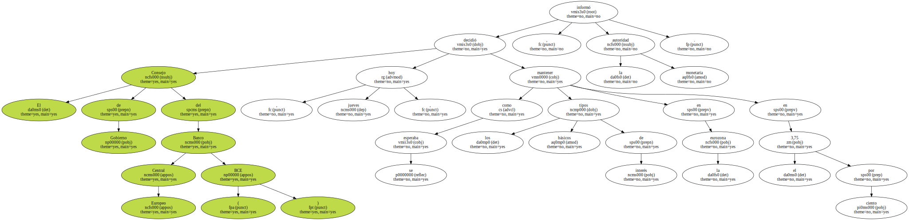La mayoría de los observadores ya habían previsto que el banco europeo no tocaría todavía los tipos y esperará hasta principios o finales de junio para volver a subirlos en 0,25 o 0,50 puntos básicos.
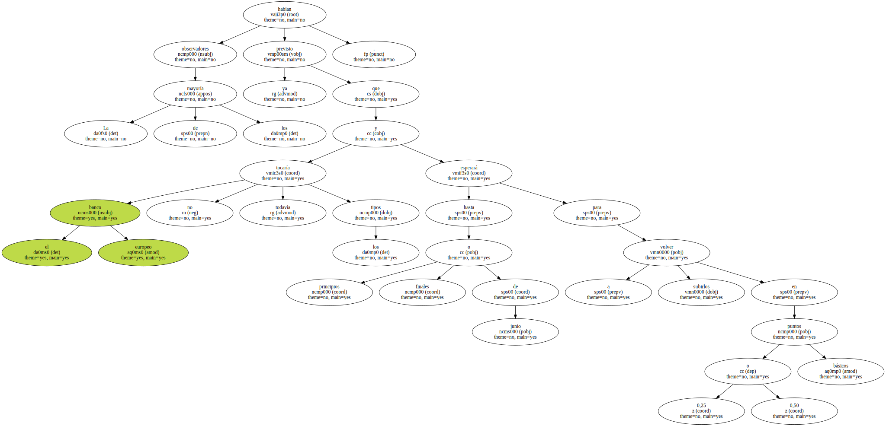El último incremento del precio del dinero por parte del BCE - el tercero en lo que va de año - se produjo el pasado 27 de abril , cuando los banqueros de Fráncfort decidieron aumentar las tasas de sus operaciones principales de refinanciación en un cuarto de punto.
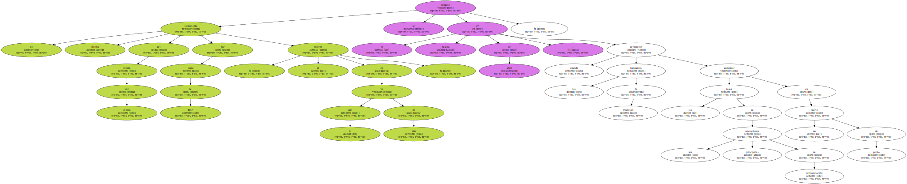En esa ocasión , la autoridad monetaria europea admitió en un comunicado su " preocupación " por los riesgos al alza para la estabilidad de los precios " derivados del fuerte crecimiento de los agregados monetarios y crediticios , así como del tipo de cambio del euro ".
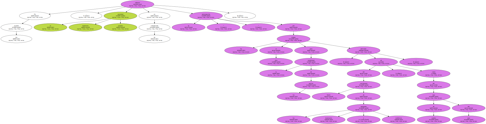El BCE reconocía así por primera vez que la depreciación del euro , que en apenas diez días había perdido casi cinco céntimos frente al dólar , influía significativamente en sus decisiones de política monetaria.
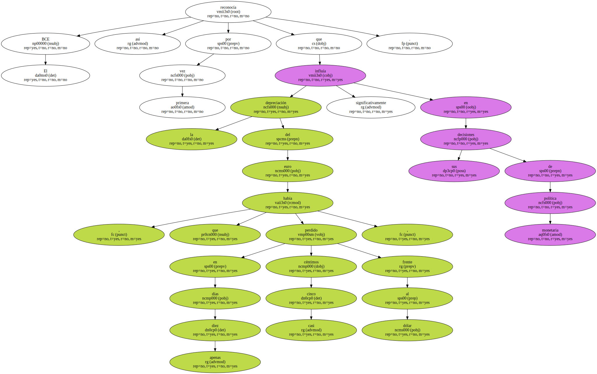Los once gobernadores de los bancos centrales de la Unión Monetaria y los seis miembros del Comité Ejecutivo del BCE analizaron hoy su política monetaria por teleconferencia , sin reunirse físicamente en Fráncfort , lo que también puede haber restado posibilidades a una decisión en contra de lo esperado.
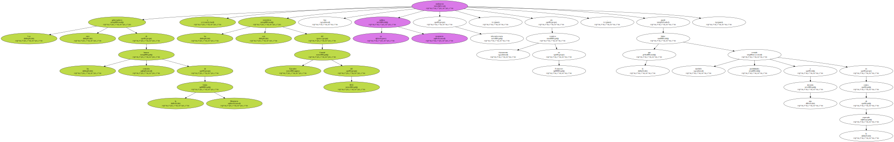Además , el índice de inflación en abril de los países del área bajó dos décimas hasta el 1,9 por ciento respecto a marzo , situándose por debajo del tope para la estabilidad de los precios fijado en el 2 por ciento por el eurobanco.
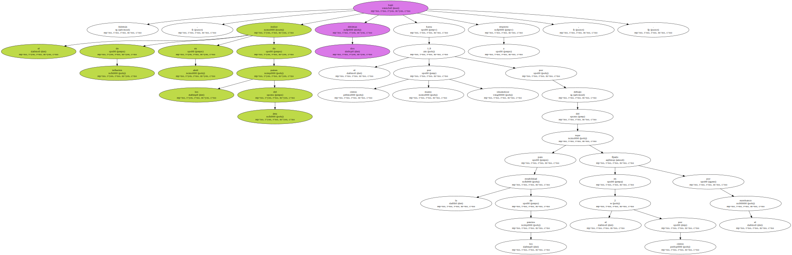Esta evolución encaja perfectamente con las previsiones sobre la evolución de la curva de inflación este año del BCE , que había pronosticado un repunte de los precios a comienzos de la primavera y una ralentización de su crecimiento para antes del verano.
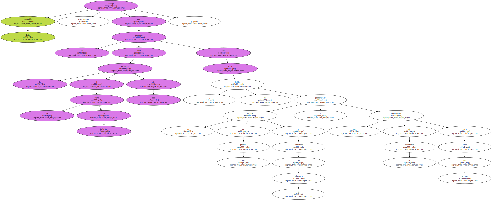Esta evolución encaja perfectamente con las previsiones sobre la evolución de la curva de inflación este año del BCE , que había pronosticado un repunte de los precios a comienzos de la primavera y una ralentización de su crecimiento para antes del verano.
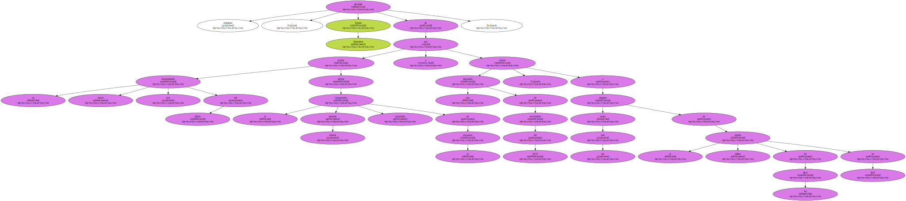Asimismo , fuentes financieras advertían de que un nuevo encarecimiento hoy del dinero podría asfixiar la todavía modesta recuperación económica de la eurozona y ofrecer una impresión de nerviosismo del BCE , a tan sólo cuatro semanas de la última subida de los tipos en abril.
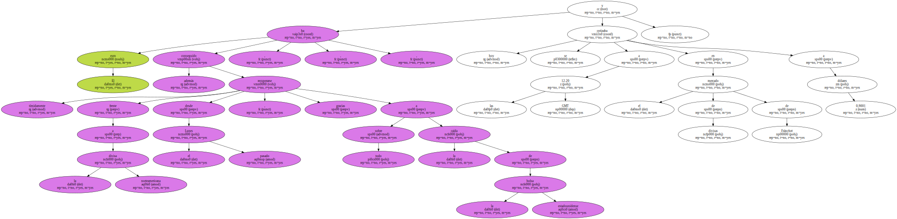El euro ha conseguido , además , recuperarse tímidamente frente a la divisa norteamericana desde el pasado Lunes , gracias sobre todo a la caída de la bolsa estadounidense , y hoy se cotizaba a las 12.20 GMT en el mercado de divisas de Fráncfort a 0,9001 dólares.
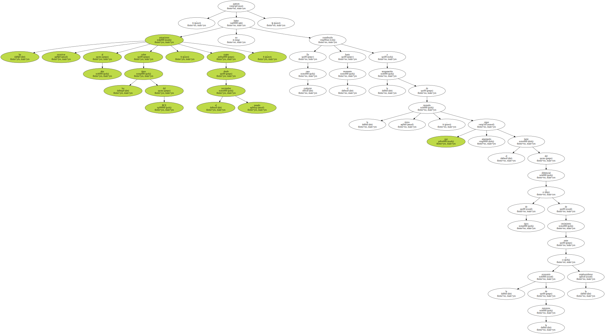En cualquier caso , las sucesivas actuaciones al alza sobre los tipos del BCE , cuatro desde el pasado noviembre , no parecen haber contribuido hasta el momento a la recuperación de la moneda única , que sigue arrastrando el lastre del diferencial de tipos y de crecimiento entre la economía de la eurozona y la estadounidense.
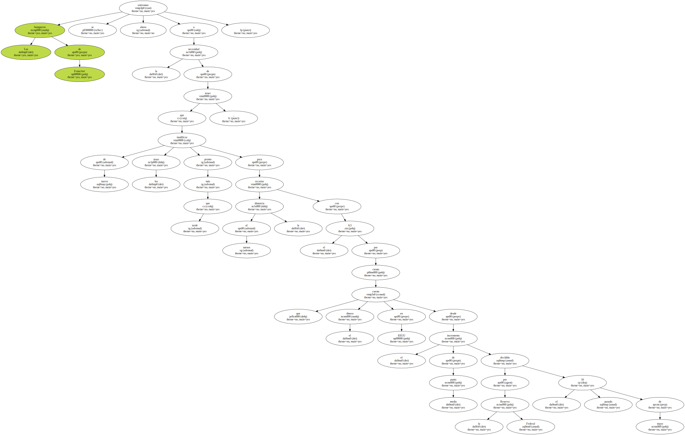Los banqueros de Fráncfort se enfrentan ahora a la necesidad de tener que modificar de nuevo los tasas más pronto que tarde , para recortar al menos la distancia con el 6,5 por ciento que cuesta el dinero en EEUU desde el incremento de medio punto decidido por la Reserva Federal el pasado 16 de mayo.
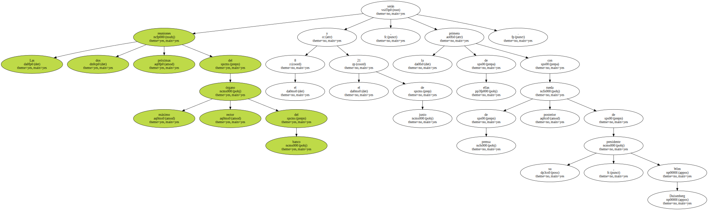Las dos próximas reuniones del máximo órgano rector del banco serán el 8 y el 21 de junio , la primera de ellas con rueda de prensa posterior de su presidente , Wim Duisenberg.
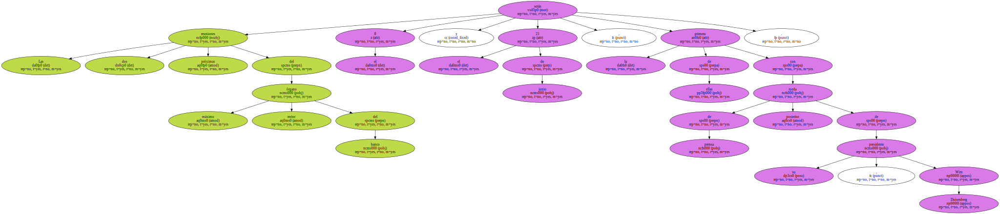Aunque los analistas consultados por EFE coinciden en que antes del final de ese mes el banco subirá de nuevo los tipos , las opiniones difieren en cuanto a la fecha más adecuada y también en relación con la magnitud del incremento , que los más osados sitúan en 0,5 puntos básicos.
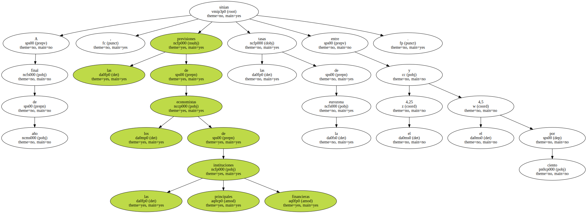A final de año , las previsiones de los economistas de las principales instituciones financieras sitúan las tasas de la eurozona entre el 4,25 y el 4,5 por ciento.

En su reunión de hoy , el máximo órgano rector del banco tampoco modificó la facilidad marginal de crédito ( por la que presta dinero a las entidades ) , ni la facilidad de depósito ( por la que remunera el dinero ) , dejándolas en el 4,75 y el 2,75 por ciento , respectivamente.
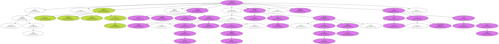